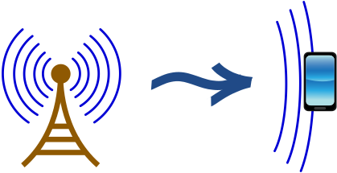
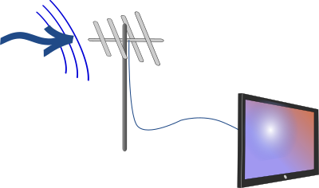
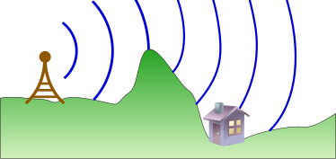
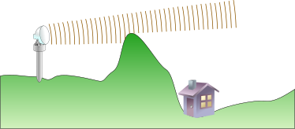
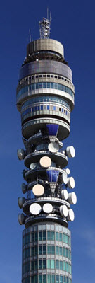
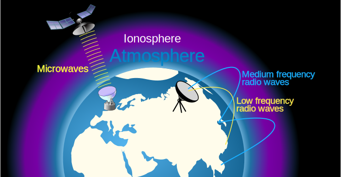
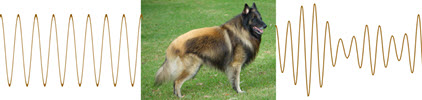
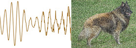

Radio Waves and Microwaves
Radio waves and microwaves are very important to us for communication.

And for heating up left over pizza!
Electromagnetic
They are both on the long wavelength end of the Electromagnetic Spectrum:
- Radio waves have wavelengths of 1 m up.
The frequency at 1 m is 300 MHz. - Microwaves have wavelengths of 1 mm (millimeter) to 1 m.
The frequency at 1 mm is 300 GHz.
(Note: some people say microwaves are just a type of radio wave, so for them radio waves have wavelengths of 1 mm up.)
We can create radio and microwaves, and they are also produced by the Sun and many other natural sources.
Wireless Communication
We use radio and microwaves to communicate without wires. This is great, as we can move around and live our lives while still being in touch.
Transmitting and Receiving

Transmit ... and Receive on a device
Radio waves are produced by a vibrating electric current in an antenna ...
... the electromagnetic waves then spread out ...
... and are then received by a small antenna inside your device, that detects the very small amount of current created by the radio waves.
Your device can then decode the signal, and you can watch or listen to what was sent out.
Broadcasting
Radio waves are good at broadcasting (sending out to lots of receivers) and that is how we get to listen to radio and TV broadcasts.

TVs (and radios!) can receive broadcast signals using antennas.
Radio waves are good at bending around buildings and hills by diffraction (see below also).
Microwave Ovens
Microwave ovens use electromagnetic waves at a frequency of 2.45 GHz (wavelength about 12 cm) that make water molecules vibrate fast and heat up.

Microwaves are created by the Magnetron,
are sent in different directions by the stirrer,
bounce off metal surfaces,
and are absorbed by the water in food.
Microwaves can travel through glass and plastic and penetrate about a centimeter into food (depending on the food), but bounce off metal surfaces.
There must always be something to absorb the microwaves, such as food or a glass of water.
So basically you are cooking by heating up the water in the first cm or so of the food. That is why many recipes say to leave the food stand for a while (to let the heat spread evenly).
Microwaves can also heat us up and can damage our cells. Keep the door closed when on, and never use a damaged microwave oven.

Wave diffraction into a bay
Diffraction
Diffraction is very important for radio communications!
Diffraction is when waves bend around the corner of an obstacle.

Medium gap: some diffraction, but mostly straight
Gap of wavelength size: most diffraction
The maximum effect is when the gap and wavelength are about the same size.

Radio waves with wavelengths of kilometers diffract
over hills and through valleys so you can easily get reception.

But microwaves with wavelength of centimeters mostly go straight.

So radio waves are good at "broadcasting" to many people, but microwaves are good at point-to-point communication.
And for microwaves the transmitter and receiver must be "line of sight" (they can see each other).
A typical microwave antenna is a parabolic dish of about 0.3 m to 3 m in diameter, like on this building:
Ionosphere
The ionosphere is an electrically charged layer of the upper atmosphere that is between 75 and 1000 km above the ground.
It is very important for radio and microwave communication!
Low to medium frequency radio waves get reflected off the ionosphere, so it is possible to receive radio signals from far away that have bounced their way to us.

(Not to scale)
But microwaves can cut right through the ionosphere so they are good for communicating with satellites.
Signal and Noise

Information can be in analog or digital form.
Analog
Information can be put onto a wave by altering its height or wavelength a little:

A wave has a signal of this picture put into it.
As the wave travels it gets noise (random changes) added by other electrical activity around it:

When we try to recreate the image the result is not perfect!
Digital
But with digital we expect only certain values, such as 0s or 1s. So noise (if not too big) can be overcome.
Even with noise we still know every 0 and 1 and get a perfect image.